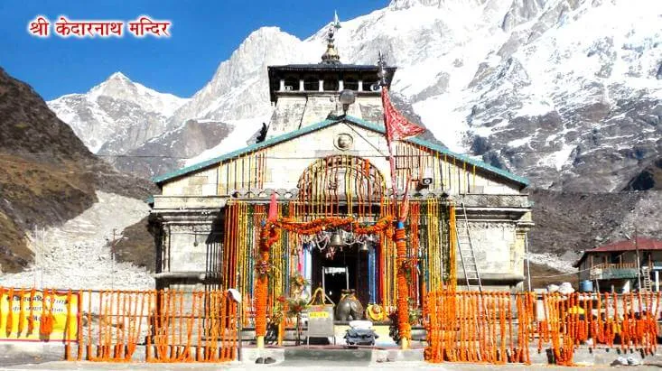

ABOUT KEDARNATH TEMPLE

Kedarnath Dham, located in the Rudraprayag district of Uttarakhand, is one of the most paramount locations for worshipers of Shiva. The air appears to be reverberating with the name of Lord Shiva amid the mighty snow-clad peaks, enchanting meadows and forests of the lower mountain range of Himalayas. Situated in a breathtaking location, near the source of Mandakini River and at the height of 3,584 meters, Kedarnath Dham celebrates the greatness of Lord Shiva. Kedarnath temple is one of the 12 Jyotir Lingams and is also the most important temple among the Panch Kedars (group of 5 Shiva temples in Garhwal Himalayas). It is also one of the significant temples of the sacred Chota Char Dham Yatra in Uttarakhand, raising the glory of the place to further heights.
Accessible from major destinations of Uttarakhand, the motorable road towards Kedarnath temple stretches till Gauri Kund. After that one needs to take a 14 km trek towards Kedarnath temple. Ponies and palanquins (doli) are easily available; one can also avail helicopter services during peak season of yatra.
The hard journey till the great shrine of Shiva is well compensated with the spiritual atmosphere which is created by the unruffled, tranquil and splendid beauty of the region. The majestic Kedarnath peak (6,940 meters) stands behind the temple along with other peaks, forming a perfect setting for the holy land of the supreme deity. The conical-shaped Shiva lingam in the Kedarnath temple is a unique feature of the temple among all Shiva shrines.